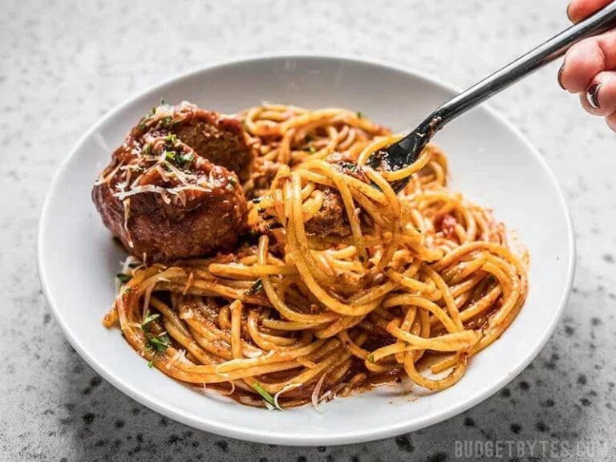

Slow Cooker Meatballs

Description
Ingredients
- 1/2 lb. ground beef
- 1/2 lb. italian sausage
- 1 large egg (beaten)
- 1/2 cup breadcrumbs
- 1/4 cup parmesan
- 1/4 tsp onion powder
- 1/4 tsp garlic powder
- 1/4 tsp salt
- 26 oz. jar marinara sauce
- 12 oz. spaghetti
Steps
- Mix ground beef, sausage, egg, breadcrumbs, parmesan, onion powder, garlic powder and salt to bowl.
- Divide mixture into equal portions and form into balls.
- Place meatballs into slow cooker and pour marinara over top.
- Close slow cooker and cook low for ~5 hours.
- Near end of meatballs cook time prepare spaghetti according to packaging and serve.